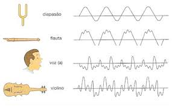

Las ondas sonoras transmitidas por el aire, permitiendo que la voz llegue desde nuestro aparato fonador, hasta los oídos de nuestro interlocutor en una conversación.

Los pulsos telefónicos, con los que operaban los teléfonos de antaño, o bien las microondas con que operan nuestros teléfonos celulares, permitiendo que el sonido de nuestra voz se transporte desde nuestra terminal hasta la del receptor y viceversa
Las ondas de radio, emitidas por una estación de radio en algún lugar de nuestro país, y recibidas por un aparato receptor capaz de decodificarlas y convertirlas en ondas sonoras que, a través del aire, lleguen a nuestro oído.
Atrás